Herbert Wright1,
Weiming Zhi2, Matthew Johnson-Roberson2, Tucker
Hermans1,3
1University of Utah,
2Carnegie Mellon University, 3NVIDIA
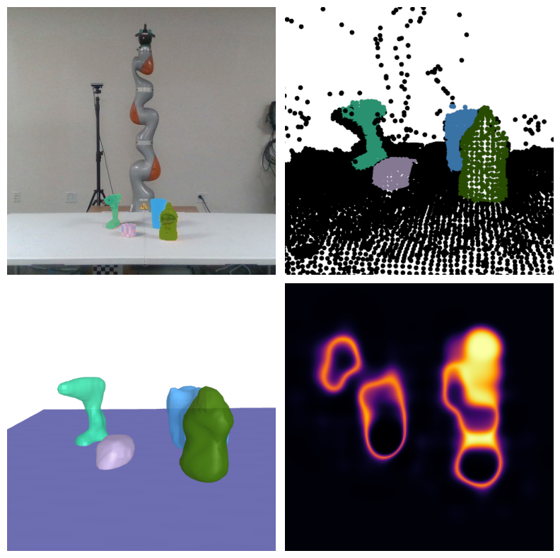
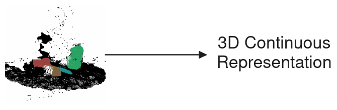
We care about multiple objects, robustness, and uncertainty.
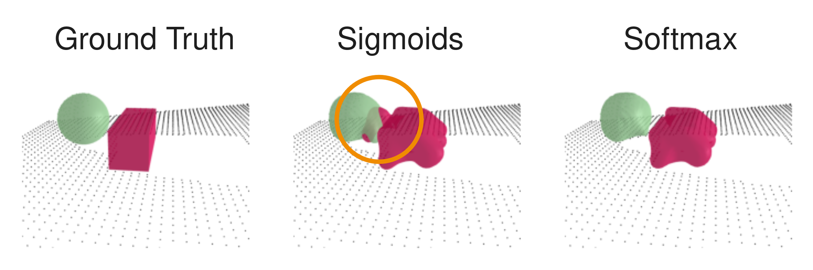
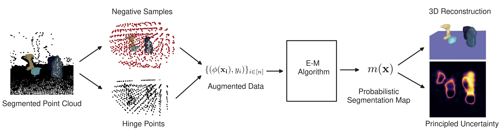
Negative Sampling
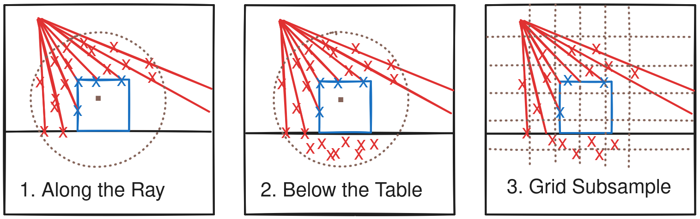
EM Updates
\hat{\Sigma}^{-1}_k = \bar{\Sigma}^{-1} + 2 \sum_{i = 1}^n \lambda(\xi_{i,k}) \phi({\bf x_i}) \phi({\bf x_i})^\top \hat{\mu}_k = \hat{\Sigma}_k \left[ \bar{\Sigma}^{-1}_k \bar{\mu}_k + \sum_{i = 1}^n \left( y_{i, k} - \frac{1}{2} + 2 \alpha_i \lambda(\xi_{i, k}) \right) \phi({\bf x_i}) \right] \xi^2_{i, k} = \phi({\bf x_i})^\top \Sigma_k \phi({\bf x_i}) + (\mu^\top_k \phi({\bf x_i}))^2 + \alpha_i^2 - 2\alpha_i \mu^\top_k \phi({\bf x_i}). \alpha_i = \frac{\frac{1}{2} (\frac{c}{2} - 1) + \sum_{k=1}^c \lambda(\xi_k) \mu_k^\top \phi({\bf x_i})}{\sum_{k=1}^c \lambda(\xi_k)}.
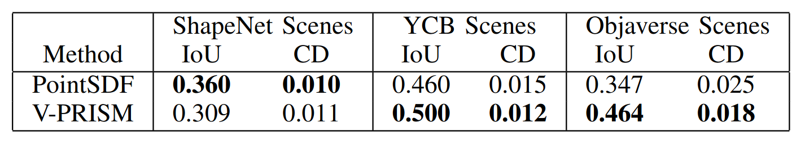
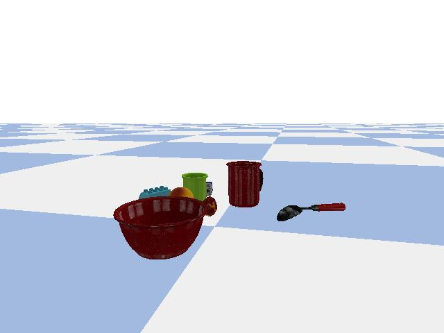
Example Scene
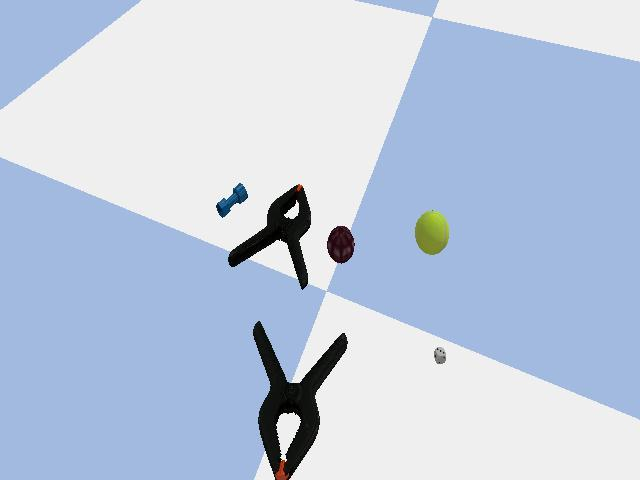
Example Scene
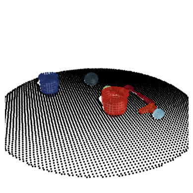
Example Reconstruction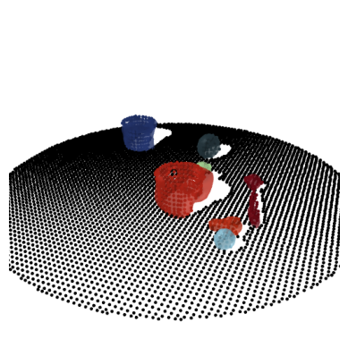
Another View of Reconstruction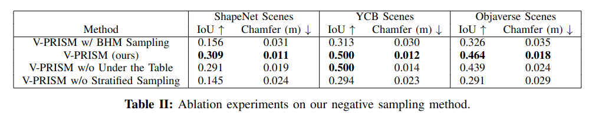
Point cloud
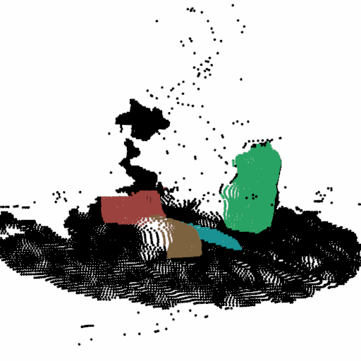
Reconstruction
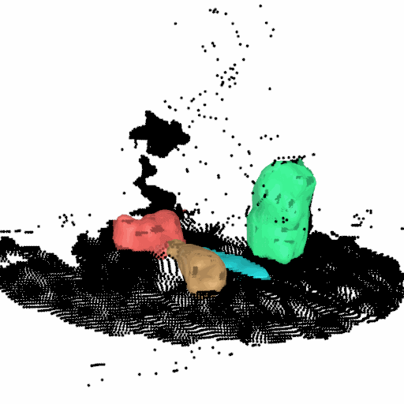
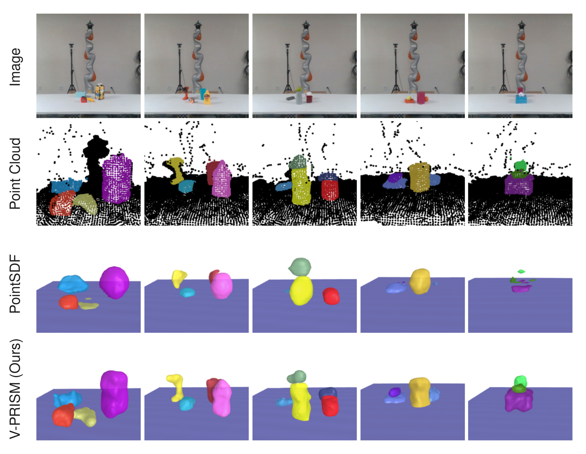
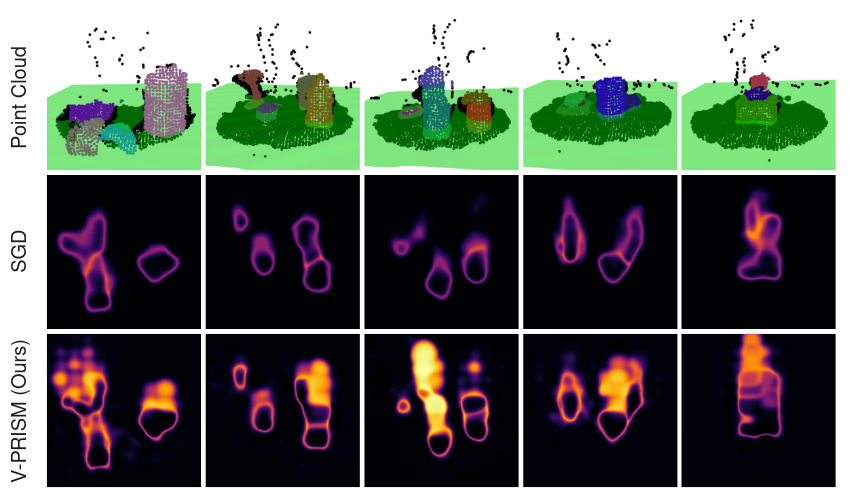
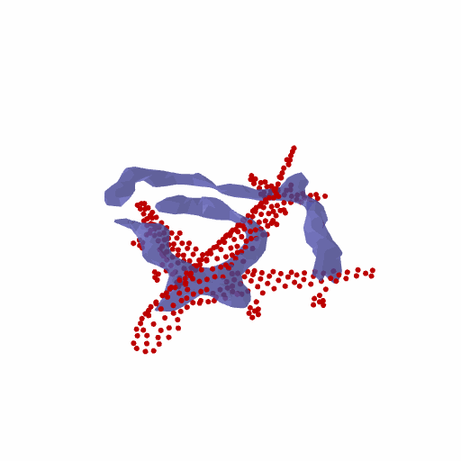
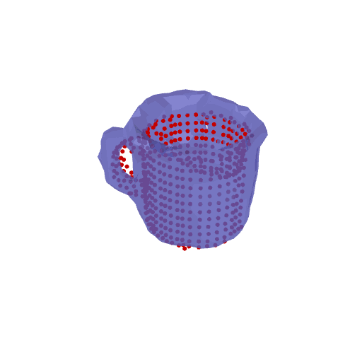